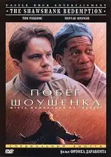
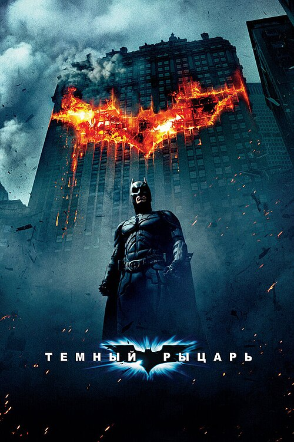

Побег из Шоушенка
«Побег из Шоушенка» — американский драматический фильм 1994 года, сценаристом и режиссёром которого выступил Фрэнк Дарабонт...
Подробнее»Крестный отец
«Крёстный отец» — американский эпический гангстерский драматический фильм 1972 года режиссёра Фрэнсиса Форда Копполы. В главных ролях Марлон Брандо, Аль Пачино, Джеймс Каан. Это первый фильм одноимённой трилогии о семье Корлеоне.
Подробнее»
Тёмный рыцарь
«Тёмный рыцарь» — американский супергеройский фильм 2008 года с участием одноимённого персонажа DC Comics. Режиссёр Кристофер Нолан. Бэтмен пытается контролировать преступность в Готэм-сити, но Джокер погружает город в хаос.
Подробнее»Киноиндустрия: от немого кино до стриминга
Кинематограф родился в конце XIX века, когда братья Люмьер показали первый фильм «Прибытие поезда на вокзал Ла-Сьота». С тех пор прошло более ста лет, и кино превратилось из простого развлечения в мощнейшее искусство, способное влиять на умы миллионов людей по всему миру.
Сегодня киноиндустрия — это гигантская машина с годовым оборотом свыше 100 миллиардов долларов. Голливуд, Болливуд, европейское и азиатское кино конкурируют за внимание зрителя, предлагая всё более зрелищные и глубокие произведения.
Появление стриминговых платформ — Netflix, Amazon Prime, Disney+ — кардинально изменило правила игры. Теперь фильмы и сериалы доступны мгновенно, а традиционные кинотеатры вынуждены искать новые способы привлечь аудиторию.
Но несмотря на все технологические изменения, главное в кино остаётся неизменным — хорошая история. Именно она заставляет нас смеяться, плакать и задумываться о жизни.
Подробнее»Интерстеллар
«Интерстеллар» — эпический научно-фантастический фильм 2014 года Кристофера Нолана. Группа астронавтов путешествует...
Подробнее»Криминальное чтиво
«Криминальное чтиво» — фильм Квентина Тарантино 1994 года, получивший Золотую пальмовую ветвь Каннского фестиваля. Нелинейное повествование о жизни гангстеров Лос-Анджелеса стало культовым.
Подробнее»Бойцовский клуб
«Бойцовский клуб» — фильм Дэвида Финчера 1999 года по роману Чака Паланика. История о мужчине, страдающем бессонницей, который создаёт подпольный бойцовский клуб. Философский триллер о потребительстве.
Подробнее»